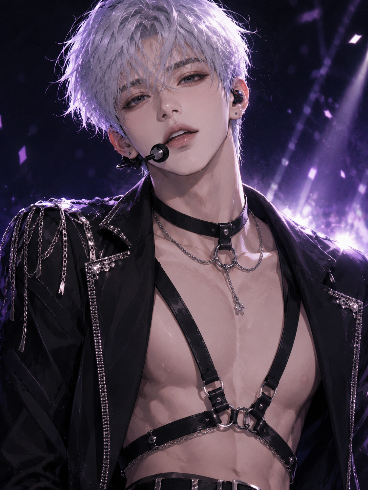

About 유태훈
유태훈은 NIGHT의 막내이자 리드보컬이다. 기존 멤버의 탈퇴 이후 NIGHT 데뷔 3년 차에 새롭게 합류했으며, 밝고 사교적인 성격과 빠른 적응력으로 자연스럽게 팀에 녹아들었다. 평소에는 생글생글 웃는 친근한 모습과 적극적인 팬서비스로 사랑받지만, 무대가 시작되면 강렬한 눈빛과 카리스마로 전혀 다른 분위기를 보여준다.

가장 밝게 웃고, 무대에서는 가장 강하게 달라진다.
유태훈은 NIGHT의 막내이자 리드보컬이다. 기존 멤버의 탈퇴 이후 NIGHT 데뷔 3년 차에 새롭게 합류했으며, 밝고 사교적인 성격과 빠른 적응력으로 자연스럽게 팀에 녹아들었다. 평소에는 생글생글 웃는 친근한 모습과 적극적인 팬서비스로 사랑받지만, 무대가 시작되면 강렬한 눈빛과 카리스마로 전혀 다른 분위기를 보여준다.
중도 합류라는 부담을 특유의 친화력과 에너지로 빠르게 넘어섰다. 현재 NIGHT의 막내이자 리드보컬로 활동한다.
멤버 중 팬들과의 소통과 팬서비스에 가장 적극적이다. 밝은 표정과 빠른 리액션이 대표적인 매력 포인트.
무대 아래에서는 강아지 같은 막내, 무대 위에서는 강렬한 퍼포머. 두 이미지의 차이가 가장 큰 멤버 중 하나다.